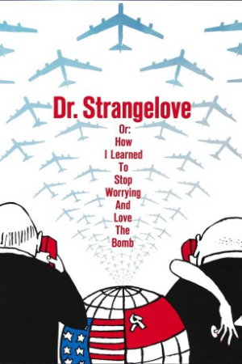

Country:United Kingdom, 95 minutes
Spoken languages:English
Genres:Drama, Comedy, War
Director(s):Stanley Kubrick
Writer(s):Stanley Kubrick, Terry Southern, Peter George, Peter George
Video Codec:Unknown
Number: 2295


Certification:PG
Storyline:
After the insane General Jack D. Ripper initiates a nuclear strike on the Soviet Union, a war room full of politicians, generals and a Russian diplomat all frantically try to stop the nuclear strike.
Cast:


Medium: Original DVD,
Loaned: No
Aspect ratio: Unknown